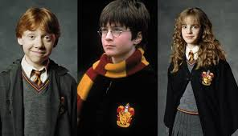

La serie cinematográfica de Harry Potter comprende ocho películas basadas en Harry Potter, una serie de siete novelas juveniles escritas por la autora británica J. K. Rowling y protagonizadas por el mago ficticio del mismo nombre. Se trata de películas de cine fantástico, todas basadas en las novelas de la saga y todas estrenadas en el decenio comprendido entre 2001 y 2011.1 Se realizó una película por cada libro de la saga a excepción del último libro, cuya adaptación cinematográfica ocupó dos películas distintas. Los largometrajes fueron producidos por el estudio estadounidense Warner Bros., que se asoció con la productora de David Heyman con el fin de trasponer las novelas a la pantalla grande. La primera película de la franquicia, Harry Potter y la piedra filosofal, fue estrenada mundialmente a finales del año 2001 y desde entonces se estrenó una nueva entrega con una frecuencia de un mínimo de ocho meses (entre Harry Potter y las reliquias de la Muerte: parte 1 y Harry Potter y las reliquias de la Muerte: parte 2) y un máximo de dos años (entre Harry Potter y la Orden del Fénix y Harry Potter y el misterio del príncipe).
Historia
¿De donde nace la historia de Harry?
Trama de la historia
se trata de un pasado ficticio, el mundo mágico de las novelas de Harry Potter es un universo paralelo al nuestro y contiene diversos elementos mágicos análogos a cosas del mundo no mágico o muggle. Este universo mágico tiene una organización política para cada Estado; en el caso del Reino Unido, donde se desarrolla la mayor parte de la acción, la máxima institución es el Ministerio de Magia. Existe un «Estatuto Internacional del Secreto» que obliga a todos los magos y brujas del mundo a mantener en secreto para los muggles la existencia del mundo mágico. La capacidad de hacer magia, según las novelas, es innata más que aprendida, aunque los jóvenes magos deben asistir a escuelas con el fin de dominarla y controlarla. Esta capacidad es totalmente hereditaria, aunque existan magos hijos de muggles (o «sangre sucia» de forma despectiva) pues estos siempre debieron tener un ascendente mago; también es posible que existan hijos de magos sin alguna capacidad mágica. A estos últimos se los llama "squibs". Los magos tienen un desarrollado sistema social, con su propia moneda, sanidad y una compleja red de transportes y comunicaciones.
Personajes
Harry Potter es el protagonista principal y quien da título a la serie. Es un niño huérfano que vive con sus crueles tíos hasta que en su undécimo cumpleaños se entera de que es un mago y averigua que cuando tenía un año, lord Voldemort asesinó a sus padres, y cuando quiso hacer lo mismo con él, la maldición asesina se volvió sobre sí mismo, haciéndolo desaparecer, mientras que a Harry solo le quedó una cicatriz en la frente con forma de rayo. Posteriormente, descubre que su destino está ligado al de Voldemort, y que debe ser él quien evite el resurgimiento del "Señor Oscuro". Ron Weasley es el mejor amigo de Harry Potter y, junto con Hermione Granger, uno de sus compañeros de aventuras. Aparece descrito como un chico alto y pelirrojo, que junto con sus padres y hermanos (que también tienen un papel importante en la serie) viven en «la Madriguera». Ron vive a la sombra de sus cinco hermanos mayores, además de la del propio Harry, lo cual ha generado varias discusiones entre ambos a lo largo de la serie. Hermione Granger compone junto con Harry y Ron el trío de protagonistas. Aunque en los primeros libros su papel es minoritario en comparación al de los dos chicos, a partir de El prisionero de Azkaban el desarrollo de su personaje crece y sus habilidades son cada vez más requeridas. Hermione es muy inteligente y estudiosa, y siempre antepone la lógica y el pensamiento frío ante la valentía de sus compañeros. A partir del cuarto libro expone implícitamente sus sentimientos hacia Ron, los cuales no se aclararán hasta la última entrega. Albus Dumbledore es el director de Hogwarts. Es considerado como uno de los magos más poderosos de su tiempo y uno de los principales mentores de Harry. Los libros suelen acabar con una conversación entre Harry y Dumbledore en las que este último revela detalles de las incógnitas que surgen en la trama. En el sexto libro da clases particulares a Harry, enseñándole sobre los horrocruxes. Al final de esta novela, es asesinado por Severus Snape, dejando al mundo mágico a merced del segundo levantamiento de Voldemort.
